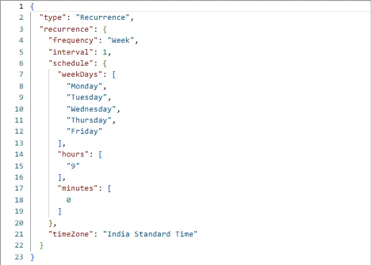

- Power Automate
- Level 8 · Real-world patterns · 3 of 8
Reminder and recurrence flows
Some work is started by the clock: a daily digest, a weekly reminder, a monthly clean-up. These are scheduled flows, started by the Recurrence trigger.
The schedule
WhatA Recurrence trigger with frequency, days, hours and a time zone.
WhyWithout a time zone, 9:00 means 9:00 UTC: 2:30 PM in India.
DemoWeekdays at 9:00 India time, remind about requests still waiting.

| Setting | Demo | Does |
|---|---|---|
| Frequency / interval | Week / 1 | How often |
| On these days | Mon–Fri | Skip weekends (Week frequency only) |
| At these hours / minutes | 9 / 0 | Time of day in the chosen zone |
| Time zone | India Standard Time | So 9:00 means 9:00 locally |
Reminding about waiting requests
Each weekday at 9:00
Recurrence
Get waiting requests (Status New or Pending)
Reminder rows (Select): title, status, days waiting
Any waiting?
Yes
Send one summary with the table
No
Send nothing


div(sub(ticks(utcNow()), ticks(item()?['Created'])), 864000000000)| Piece | What it does |
|---|---|
ticks / sub / div | Whole days since the item was created. |
Send one summary per person per run, not one per item, and only when there's something to send.
Looking back since the last run
A daily time window
Start:
addDays(utcNow(), -1)End:
utcNow()Filter:
Modified ge 'start' and Modified lt 'end'Nothing is processed twice and nothing is missed, as long as runs aren't skipped.
New to this? Start from the basics optional
Scheduled flow: started by Recurrence instead of an event.
Common mistakes
- No time zone set.
- One message per item.
- Messages sent when nothing is waiting.